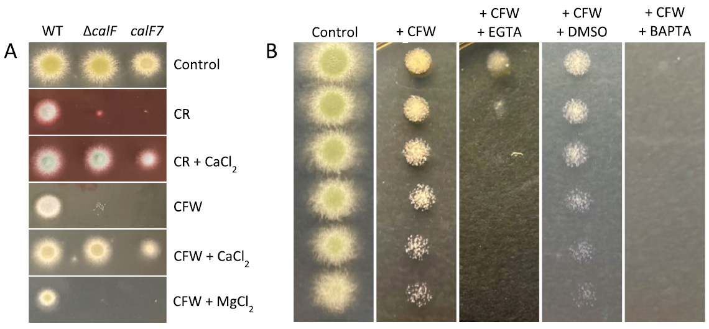

Aspergillus nidulans
Role of Mechanosensitive Ion Channels in Cell Wall Integrity

In earlier work (Link) we identified a number of mutant strains showing high sensitivity to agents that compromise cell wall integrity. We designated one of these as calF7.
Through Mendelian gene mapping and sequencing of genomic DNA, we have shown
that the calF7 mutation lies in a gene encoding an A. nidulans orthologue of a mechanosensitive calcium ion channel in the OSCA/TMEM63 protein family. The protein localizes
to the plasma membrane at the growing cell apex and at sites of cell division, which are sites of cell wall synthesis.
The top image depicts the domain structure of A. nidulans CalF, with the site of the mutation in red.
The bottom-left images show localization of CalF (green) to the apical
cell membrane.
Localization to the Spitzenkörper (labeled by SepA) is due to gathering of exocytic vesicles containing CalF. The bottom right images show localization of CalF (green) at the septal membrane; the
CAR component SepA is shown in red. |
We also show that resistance to wall compromising agents like Calcofluor White (CFW) and Congo Red (CR) depends upon availability of extracellular calcium ions.
|  |
A. Raising the level of extracellular calcium allows calF7 strains to show wild type resistance to CFW and CR.
B. Depleting extracellular calcium
impairs the ability of wild type strains to resist CFW. |
|---|
Literature:
Hill, T. W., S. Vance Jr., J. F. Loome, B. J. Haugen, D. M. Loprete, S. V.
Stoddard, and L. Jackson-Hayes. 2023. "A member of the OSCA/TMEM63 family
of mechanosensitive calcium channels participates in cell wall integrity maintenance
in Aspergillus nidulans" Fungal Genetics & Biology 169: 103842